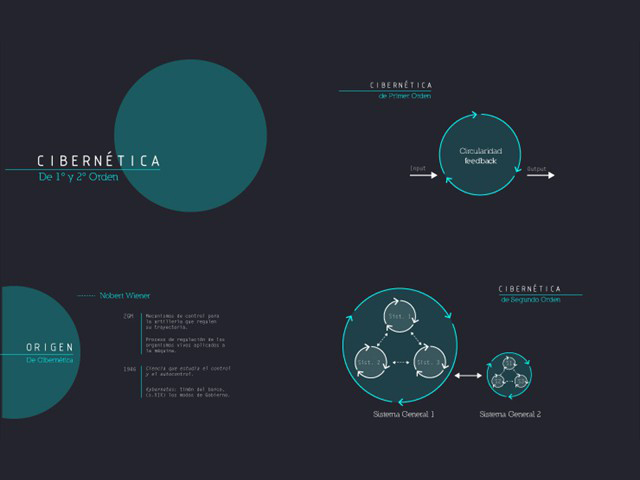
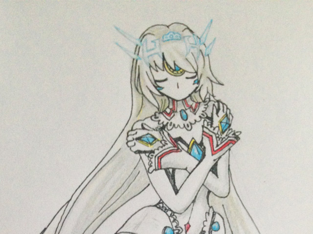

Bienvenidos todos
Portafolio Digital

Rata bajo a lluvia
2016
Juego realizado en Processing. Consiste en un ratoncito que debe atrapar las gotas que caen desde el cielo usando su paraguas.

Presentaciones
2017
Algunas diapositivas de la presentación sobre cibernética de primer y segundo orden.

Dibujos
2014
Me gusta dibujar personajes de videojuegos, pero es algo que realizo más como pasatiempo personal.
"El día que logre bajar el background rojo del footer hacia el lugar que corresponda, seré feliz."
Denisse Ortega